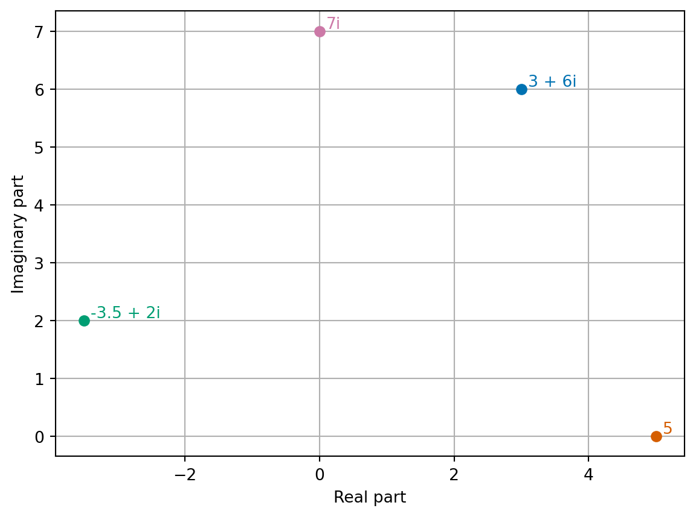
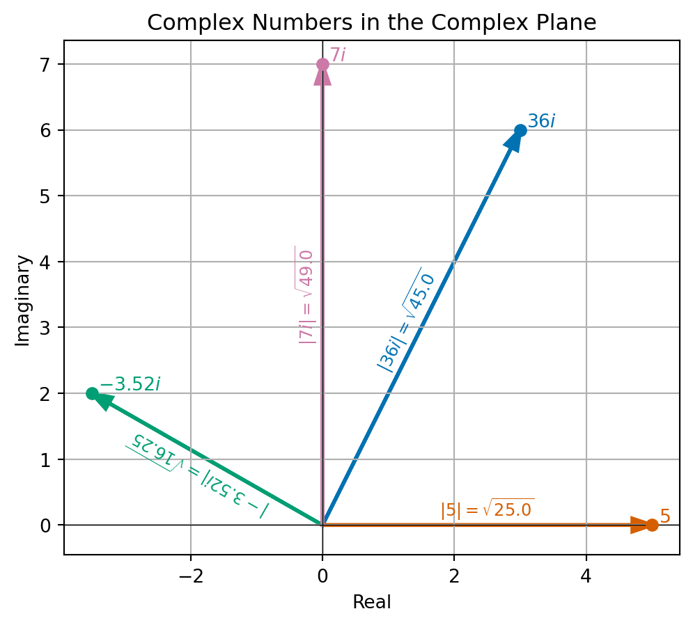
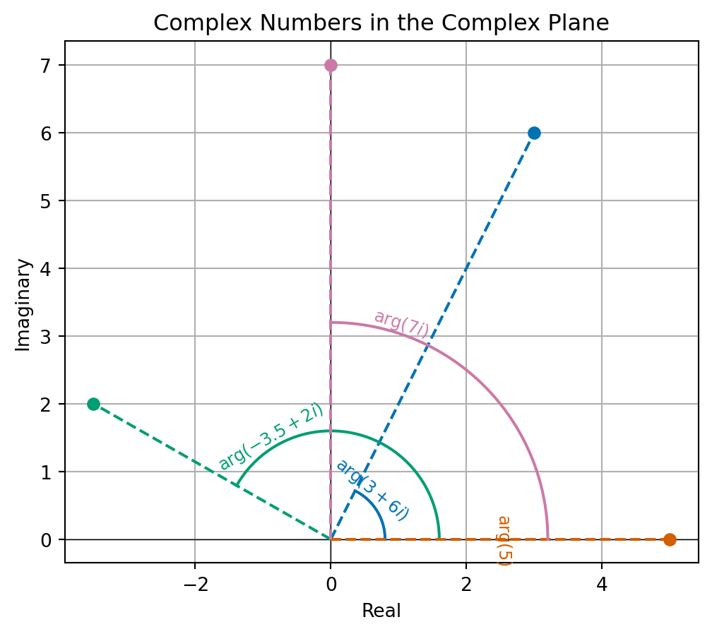

7 Complex numbers
This section of the notes supports the final learning outcome around eigenvalues and eigenvectors.
7.1 Basic definitions
A complex number is an element of a number system which extends our familiar real number system. Our motivation will be for finding eigenvalues and eigenvectors which is the next topic in this module. In order to find eigenvalues, we will need to find solutions of polynomial equations and it will turn out to be useful to always be able to get a solution to any polynomial equation.
Example 7.1 Consider the polynomial equation \[\begin{equation} x^2 + 1 = 0. \end{equation}\]
We can see that this equation has no solution over the real numbers.
The key idea of complex numbers is to create a new symbol, that we will call \(i\), or the imaginary unit which satisfies: \[\begin{equation*} i^2 = -1 \qquad \sqrt{-1} = i. \end{equation*}\] By taking multiples of this imaginary unit, we can create many more new numbers, like \(3i, \sqrt{5} i\) or \(-12 i\). These are examples of imaginary numbers.
We form complex numbers by adding real and imaginary numbers whilst keeping each part separate. For example, \(2 + 3i\), \(\frac{1}{2} + \sqrt{5} i\) or \(12 - 12i\).
Definition 7.1 Any number that can be written as \(z = a + bi\) with \(a, b\) real numbers and \(i\) the imaginary unit are called complex numbers. In this format, we call \(a\) the real part of \(z\) and \(b\) the imaginary part of \(z\).
We notice that all real numbers \(x\) must also be complex numbers since \(x = x + 0 i\).
Remark 7.1. Among the first recorded use of complex numbers in European mathematics is by an Italian mathematician Gerolamo Cardano in around 1545. He later described complex numbers as being “as subtle as they are useless” and “mental torture”.
The term imaginary was coined by Rene Descartes in 1637:
… sometimes only imaginary, that is one can imagine as many as I said in each equation, but sometimes there exist no quantity that matches that which we imagine.
Exercise 7.1 What are the real and imaginary parts of these numbers?
- 3 + 6i
- -3.5 + 2i
- 5
- 7i
7.2 Calculations with complex numbers
We can perform the basic operations, addition, subtraction, multiplication and division, on complex numbers.
Addition and subtraction is relatively straight forward: we simple treat the real and imaginary parts separately.
Example 7.2 We can compute that \[\begin{align*} & (2 + 3i) + (12 - 12i) = (2 + 12) + (3 - 12)i = 14 - 9i \\ & (2 + 3i) - (12 - 12i) = (2 - 12) + (3 - (-12))i = -10 + 15i. \end{align*}\]
Exercise 7.2 Compute \((3+6i) + (-3.5 + 2i)\) and \((3 + 6i) - (-3.5 + 2i)\).
For multiplying and dividing, we first say that applying these operations between complex and real numbers again follows the usual rules. Let \(x\) be a real number and \(z = (a + bi)\) be a complex number, then \[\begin{align*} & x \times (a + bi) = (a + bi) \times x = (x \times a) + (x \times b) \\ & \frac{a + bi}{x} = \frac{a}{x} + \frac{b}{x} i. \end{align*}\]
For multiplication between complex numbers, things are a bit harder. We expand out brackets and apply the rule that \(i^2 = -1\):
Example 7.3 \[\begin{align*} & (2 + 3i) \times (12 - 12i) \\ & = 2 \times 12 + 3i \times 12 + 2 \times - 12 i + 3i \times - 12 i && \text{(expand brackets)} \\ & = 2 \times 12 + (12 \times 3) i + (2 \times - 12) i + (3 \times - 12) \times i^2 && \text{(rearrange)} \\ & = 24 + 36 i - 24 i - 36 \times i^2 && \text{(compute products)} \\ & = 24 + 36 i - 24 i + 36 && \text{(use $i^2 = -1$)} \\ & = 60 + 12 i && \text{(collect terms)}. \end{align*}\]
We see that we have a general formula: \[\begin{equation*} (a + bi) \times (c + di) = (ac - bd) + (ad + bc) i. \end{equation*}\]
Exercise 7.3 Compute \((3 + 6i) \times (-3.5 + 2i)\).
Division is harder - you may want to skip this on first reading since it is not so important for what follows in these notes. When we divide complex numbers, we try to rewrite the fraction to have a real denominator by “rationalising the denominator”.
Example 7.4 Suppose we want to find \((2 + 3i) / (12 - 12i)\). Our idea is to find a numbers so that we can write \[\begin{equation*} \frac{2 + 3i}{12 - 12i} = \frac{2 + 3i}{12 - 12i} \times \frac{z}{z} = frac{(2 + 3i)z}{(12 - 12i)z} = \frac{\text{something}}{\text{something real}}. \end{equation*}\] The answer is to use \(z = 12 + 12 i\) - that is the denominator with the sign of the imaginary part flipped (we will give this a name later on).
We can compute that \[\begin{align*} & (12 - 12i) \times (12 + 12i) \\ & = (12 \times 12) + (12 \times 12i) + (-12i \times 12) + (-12i \times 12i) && \text{(expand bracket)}\\ & = 12 \times 12 + (12 \times 12) i + (-12 \times 12) i + (-12 \times 12) i^2 && \text{(rearrange)} \\ & = 144 + 144i - 144i -144 i^2 && \text{(compute products)} \\ & = 144 + 144i - 144i + 144 && \text{(use $i^2 = -1$)} \\ & = 288 + 0 i && \text{(collect terms)}. \end{align*}\] So we have that \((12 - 12i) \times (12 + 12i) = 288\) is a real number.
We continue by computing that \[\begin{align*} & (2 + 3i) \times (12 + 12i) \\ & = (2 \times 12) + (2 \times 12i) + (3i \times 12) + (3i \times 12i) \\ & = 2 \times 12 + (2 \times 12) i + (3 \times 12) i + (3 \times 12) i^2 \\ & = 24 + 24 i + 36 i + 36 i^2 \\ & = 24 + 24 i + 36 i - 36 \\ & = -12 + 60i. \end{align*}\]
Thus we infer that \[\begin{align*} \frac{2 + 3i}{12 - 12i} &= \frac{2 + 3i}{12 - 12i} \times \frac{12 + 12i}{12 + 12i} \\ & = \frac{(2 + 3i)(12 + 12i)}{(12 - 12i)(12 + 12i)} \\ & = \frac{-12 + 60i}{288} \\ & = \frac{-12}{288} + \frac{60}{288} i \\ & = -\frac{1}{24} + \frac{5}{24} i. \end{align*}\]
To check we have not done anything silly, we should also check that \((12 + 12i) / (12 + 12i) = 1\). This is left as an exercise.
Exercise 7.4 Find \((3 + 6i) / (-3.5 + 2i)\) and \((12 + 12i) / (12 + 12i)\).
Remark 7.2. One thing to be careful of when considering products is that the identity \(i^2 = -1\) appears to break one rule of arithmetic of square roots: \[\begin{equation*} i^2 = (\sqrt{-1})^2 = \sqrt{-1} \sqrt{-1} \neq \sqrt{(-1) \times (-1)} = \sqrt{1} = 1. \end{equation*}\] In fact, we have that \(\sqrt{x} \sqrt{y} = \sqrt{xy}\) only if \(x, y > 0\).
7.3 A geometric picture
The idea of adding complex numbers by considering real and imaginary parts separately is reminiscent of adding two dimensional vectors. For this reason, it is often helpful to think of complex numbers as points in the complex plane.
The complex plane is the two dimensional space formed by considering the real and imaginary parts of a complex number as two different coordinate axes.
Example 7.5

We can see that adding complex numbers looks just like adding two dimensional vectors! We can also use this geometric picture to help with some further operations.
The complex conjugate of a complex number \(z = a + bi\) is given by \(\bar{z} = a - bi\). (The complex conjugate is that number we used before when working out how to divide complex numbers).
Example 7.6 The complex conjugate of \(2 + 3i\) is \(2 - 3i\). The complex conjugate of \(12 - 12i\) is \(12 + 12i\).
Exercise 7.5 Find the complex conjugates of \(3 + 6i\) and \(-3.5 + 2i\).
We have already seen that the complex conjugate of a complex number is helpful when performing division of complex numbers. The reason is that computing the product of a number and its conjugate always gives a real, positive number: \[\begin{align*} & (a + bi) \times (a - bi) \\ & = (a \times a) + (a \times - b i) + (b i \times a) + (bi \times - bi) \\ & = (a \times a) + (a \times -b) i + (b \times a) i + (b \times - b) i^2 \\ & = (a \times a) + (a \times -b + b \times a) i - (b \times - b) \\ & = a^2 + b^2 + 0 i. \end{align*}\]
In fact, we use this same calculation to define the absolute value (sometimes called the modulus) of a complex number \(z = a + bi\) \[\begin{equation*} |z| = |a + bi| = \sqrt{a^2 + b^2} = \sqrt{z \bar{z}}. \end{equation*}\]
Example 7.7

Exercise 7.6 Find the value of \[\begin{equation} |3 + 6i| \quad \text{and} \quad |-3.5 + 2i|. \end{equation}\]
Consider two complex numbers \(z = a + bi\) and \(y = c + di\). Then, we have already seen that \[\begin{align*} z y & = (a + bi) \times (c + di) = (ac - bd) + (ad + bc)i. \end{align*}\] We can compute the square of the modulus of the product \(zy\) as \[\begin{align*} |zy|^2 & = (ac - bd)^2 + (ad + bc)^2 \\ & = a^2 c^2 - 2 abcd + b^2 d^2 + a^2 d^2 + 2 abcd + b^2 c^2 \\ & = a^2 c^2 + b^2 d^2 + a^2 d^2 + b^2 c^2 \\ & = (a^2 + b^2) (c^2 + d^2), \end{align*}\] and we have computed that \(|zy|= |z| |y|\).
In particular, if \(y\) has modulus 1, then \(|zy| = |z|\). This means that \(zy\) and \(z\) are the same distance from the origin but ‘point’ in different directions. We can write the real and imaginary parts as \(y = c + di = \cos(\theta) + i \sin(\theta)\), where \(\theta\) is the angle between the positive real axis and the line between \(0\) and \(y\). Then \[\begin{align*} z y & = (ac - bd) + (ad + bc)i \\ & = (a \cos(\theta) - b \sin(\theta)) + (a \sin(\theta) + b\cos(\theta)) i. \end{align*}\] Recalling the example of a rotation matrix from (TODO is it there?), we see that multiplying by \(y\) is the same as rotating the complex point (\(z\)) by an angle of \(\theta\) radians in the anticlockwise direction.
This leads us to thinking polar coordinates for the complex plane. Polar coordinates are a different form of coordinates that replace the usual \(x\) and \(y\)-directions (up and across) by two values which represent the distance to the origin (that we call radius) and angle to the positive \(x\)-axis (that we call the angle). When talking about a complex numbers \(z\) represented in the complex plane, we know that the modulus \(|z|\) represents the radius. The idea of \(\theta\) above represents the angle of a complex number that we know call the argument.
Definition 7.2 Let \(z\) be a complex number. The polar form of \(z\) is \(R (cos \theta + i \sin \theta)\). We call \(R\) the modulus of \(z\) and \(\theta\) is the argument of \(z\).
The representation of the angle only unique up to adding integer multiples of \(2 \pi\), since rotating a point by \(2 \pi\) about the origin leaves it unchanged.
Example 7.8 Let \(z = 12 -12i\). Then \[\begin{align*} |z| = |12 - 12i| = \sqrt{12^2 + 12^2} = \sqrt{2 \times 144} = 12 \sqrt{2}. \end{align*}\] We have \(\arg{z} = -\pi / 4\) since \[\begin{equation*} \cos(-\pi/4) = \frac{1}{\sqrt{2}}, \quad \text{and} \quad \sin(-\pi/4) = \frac{-1}{\sqrt{2}}, \end{equation*}\] so
\[\begin{equation*} 12 \sqrt{2} (\cos(-\pi/4) + i \sin(-\pi/4)) = 12 \sqrt{2} \left( \frac{1}{\sqrt{2}} + i \frac{-1}{\sqrt{2}} \right) = 12 - 12i. \end{equation*}\]
Exercise 7.7 Compute the modulus and argument of \(2\), \(3i\) and \(4 + 4i\).
Example 7.9

The polar representation of complex numbers then gives us a nice way to understand multiplication of complex numbers. If \(y \neq 0\), then we can check that \(\left| \frac{y}{|y|} \right| = 1\) and \(\arg{y} = \arg{\frac{y}{|y|}}\). Then writing \(zy = z \frac{y}{|y|} |y|\), we can use our calculations above to infer that multiplying by \(y\) corresponds to a anti-clockwise rotation by \(\arg{y}\) then scaling by \(|y|\).
Exercise 7.8 Check that for any non-zero complex number \(y\), that \(\left| \frac{y}{|y|} \right| = 1\) and \(\arg{y} = \arg{\frac{y}{|y|}}\).
7.4 Solving polynomial equations
As we have mentioned above, we will be using complex numbers when solving polynomial equations to work out eigenvalues and eigenvectors of matrices later in the section. The reason complex numbers are useful here is this very important Theorem:
Theorem 7.1 (The Fundamental Theorem of Algebra) For any complex numbers \(a_0, \ldots, a_n\) not all zero, there is at least one complex number \(z\) which satisfies: \[\begin{equation*} a_n z^n + \cdots + a_1 z + a_0 = 0 \end{equation*}\]
It is really important to note here that this is not true if we want \(z\) to be a real number. Let’s revisit Example 7.1.
Example 7.10 Consider the polynomial equation \[\begin{equation} x^2 + 1 = 0. \end{equation}\]
We saw before that this equation has no solution over the real numbers, but the Fundamental Theorem of Algebra tells us there must be at least one solution which is a complex number. In fact it has two solutions - \(i\) and \(-i\): \[\begin{align*} & i^2 + 1 = 0 \\ & (-i)^2 + 1 = (-1)^2 i^2 + 1 = i^2 + 1 = 0. \end{align*}\]

Notice that along the real line (Imaginary part \(=0\)), the value of the function is always above 1.
In general, to find complex roots of other quadratic equations, we can apply the quadratic formula:
Example 7.11 To find the values of \(z\) which satisfy \(z^2 - 2z + 2 = 0\), we see: \[\begin{align*} z = \frac{+2 \pm \sqrt{(-2)^2 - 4 \times 1 \times 2}}{2} = \frac{2 \pm \sqrt{-4}}{2} = \frac{2 \pm 2 \sqrt{-1}}{2} = 1 \pm i. \end{align*}\]
Exercise 7.9 Find the value of \(z\) which satisfy \(z^2 - 4z + 20 = 0\).
We will see in later sections that although this is one possible solution to compute the eigenvalues for \(2 \times 2\) matrices this approach becomes impossible for larger size matrices and we need another approach!